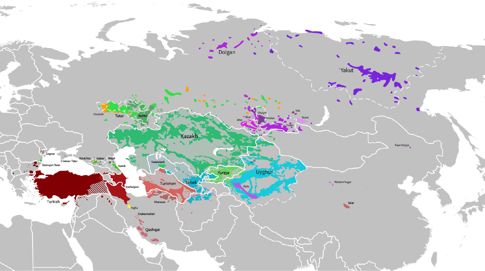

1 The Turkic World: Languages, Speakers, and the Resource Reality
After reading this chapter, you will be able to:
- Identify the major branches of the Turkic language family and their key languages
- Explain why mutual intelligibility matters for cross-lingual NLP transfer
- Assess NLP resource availability for a Turkic language task by task, and explain why raw resource counts mislead
- Name the key institutions and community infrastructure supporting Turkic NLP research
- Find your way through the book and know what each part covers
1.1 Geographic and Demographic Overview
Turkic languages are spoken across Anatolia, the Balkans, Central Asia, Siberia and western China. Johanson calls this area Turcia (Johanson 2021, 16). Figure 1.1 gives a schematic overview.


Turkic-speaking communities also live in Iran, Iraq, Afghanistan, the Caucasus and the Volga-Ural region. Migration has established communities farther afield, including in Germany (Johanson 2021, 16).
Six states give official status to Turkic languages: Turkey (Turkish), Azerbaijan (Azerbaijani), Kazakhstan (Kazakh), Kyrgyzstan (Kyrgyz), Turkmenistan (Turkmen), and Uzbekistan (Uzbek). The family has more than a dozen standard languages (Johanson 2021, 16).
Historical varieties also matter for heritage digitisation and script conversion. The first known Old Turkic texts are the early-eighth-century inscriptions of the second Türk empire, especially those on the Orkhon River (Johanson 2021, 159). Ottoman Turkish served as the Ottoman Empire’s official and literary language; its New Ottoman period lasted until 1928 (Johanson 2021, 156, 164). In Central Asia, writers cultivated the Persian-influenced literary language Chaghatay from the fifteenth century onwards (Johanson 2021, 162).
Language policy affects which corpora can be combined and reused. Different Kazakh Latin proposals, for example, require different conversion tables (Chapter 3). Funding can support resource development. To judge what it has produced, inspect the quality, coverage and access conditions of each release.
1.2 Genealogical Classification
Genealogical classification groups languages by common descent. Historical-comparative linguistics supports the Turkic family and the reconstruction of a common ancestor, Proto-Turkic (Johanson 2021, 18).
Following Johanson (2021, 22–23), the present-day Turkic languages divide into six main branches:
| Branch | Subbranches | Major Languages |
|---|---|---|
| SW (Oghuz) | West Oghuz, South Oghuz, East Oghuz | Turkish, Azerbaijani, Gagauz, Turkmen |
| NW (Kipchak) | West, North, South, East Kipchak | Kazakh, Kyrgyz, Tatar, Bashkir, Karakalpak, Kumyk, Nogai, Crimean Tatar, Karachay-Balkar, South Altai |
| SE (Karluk) | West Karluk, East Karluk | Uzbek, Uyghur |
| NE (Siberian) | South, West, North Siberian | Sakha/Yakut, Tuvan, Khakas, Shor, North Altai, Dolgan, Chulym |
| Oghur | — | Chuvash |
| Arghu | — | Khalaj |
These groups follow the classification in the cited reference; the northeastern (Siberian) group is genealogically less uniform than the others (Johanson 2021, 22). Johanson places South Altai with Kyrgyz in the eastern Kipchak subbranch and North Altai in the South Siberian subbranch (Johanson 2021, 22–23); the ISO code alt used by the toolkit and by corpora denotes Southern Altai. Oghuz includes Turkish, Azerbaijani, Turkmen and Gagauz; Kipchak includes languages of the Volga-Ural region, Caucasus and Central Asia. The Karluk group includes Uzbek and Uyghur, whose vowel systems and harmonic patterns must be described separately rather than treated as one contact-induced exception (Chapter 2). Chuvash and Khalaj represent the distinct Oghur and Arghu branches (Johanson 2021, 22–25).
Choosing a transfer language. Start with genealogical proximity when selecting donors, then test them on the target task. TurkicNLP uses proxy-language representations where training data are unavailable: Turkish for Gagauz and Crimean Tatar, Tatar for Kumyk, and Bashkir for Sakha (Hakimov 2026). Some of these choices cross branch boundaries. Their implementation alone tells us little about which donor would work best. Controlled comparisons are needed to separate the effects of genealogy, script and available training data.
Table 1.2 provides an overview of the major Turkic languages with selected scripts and language identifiers. The selection covers living languages only; the toolkit’s coverage list is a separate matter. Speaker estimates are omitted here until Appendix C supplies a dated source, geographic scope and first-language versus total-speaker definition for each estimate.
| Language | ISO Code | Branch | Script(s) | Country/Region |
|---|---|---|---|---|
| Turkish | tur | SW (Oghuz) | Latin | Turkey, Cyprus |
| Uzbek | uzb | SE (Karluk) | Latin, Cyrillic | Uzbekistan |
| Azerbaijani | aze | SW (Oghuz) | Latin, Cyrillic, Arabic | Azerbaijan, Iran |
| Kazakh | kaz | NW (Kipchak) | Cyrillic; Perso-Arabic (China); Latin proposals | Kazakhstan, China |
| Uyghur | uig | SE (Karluk) | Arabic (Perso-Arabic) | China (Xinjiang) |
| Turkmen | tuk | SW (Oghuz) | Latin; Perso-Arabic regionally | Turkmenistan |
| Kyrgyz | kir | NW (Kipchak) | Cyrillic; Perso-Arabic (China) | Kyrgyzstan |
| Tatar | tat | NW (Kipchak) | Cyrillic | Russia (Tatarstan) |
| Bashkir | bak | NW (Kipchak) | Cyrillic | Russia (Bashkortostan) |
| Chuvash | chv | Oghur | Cyrillic | Russia (Chuvashia) |
| Karakalpak | kaa | NW (Kipchak) | Latin, Cyrillic | Uzbekistan |
| Crimean Tatar | crh | NW (Kipchak) | Latin, Cyrillic | Ukraine, Turkey |
| Kumyk | kum | NW (Kipchak) | Cyrillic | Russia (Dagestan) |
| Sakha (Yakut) | sah | NE (Siberian) | Cyrillic | Russia (Sakha Republic) |
| Karachay-Balkar | krc | NW (Kipchak) | Cyrillic | Russia (Caucasus) |
| Tuvan | tyv | NE (Siberian) | Cyrillic | Russia (Tuva) |
| Gagauz | gag | SW (Oghuz) | Latin | Moldova |
| Nogai | nog | NW (Kipchak) | Cyrillic | Russia (Caucasus) |
| Southern Altai | alt | NW (East Kipchak) | Cyrillic | Russia (Altai Republic) |
| Khakas | kjh | NE (Siberian) | Cyrillic | Russia (Khakassia) |
| Shor | cjs | NE (Siberian) | Cyrillic | Russia (Kemerovo Oblast) |
The identifiers used by a toolkit need not match a dataset’s variety codes. TurkicNLP 0.5.0 lists 24 entries: alt, azb, aze, bak, chv, crh, gag, kaa, kaz, kir, kjh, klj, krc, kum, nog, ota, otk, sah, tat, tuk, tur, tyv, uig, uzb (reproduce with turkicnlp.list_languages()). This includes historical Ottoman and Old Turkic and a separate Iranian Azeri entry; it does not include Shor, Dolgan or Chulym. Dataset identifiers such as azj and uzn designate narrower varieties than the toolkit’s aze and uzb; record the mapping instead of silently equating them.
1.3 Mutual Intelligibility and What It Means Computationally
Mutual intelligibility within the Turkic family is “very limited within the family as a whole, but it is occasionally relatively high between neighbouring speaker groups” (Johanson 2021, 16). Johanson gives examples at both ends. Kumyk has a high degree of mutual intelligibility with Azeri (Johanson 2021, 61), and the increasing mutual intelligibility of Kyrgyz and Kazakh appears to result from recent convergence (Johanson 2021, 72). Turkish and Turkmen are closer to each other than either is to Kazakh or Uyghur (Johanson 2021, 21). At the other end, Yakut (Sakha) and Dolgan are unintelligible to speakers of other Turkic languages (Johanson 2021, 24). Intelligibility between neighbouring varieties is therefore not a simple function of branch membership.
Written similarity. In TurkicNLP’s small parallel sample, conversion to a common script increased character-trigram overlap between languages written in different scripts (Hakimov 2026). Spelling had hidden some shared forms. Human intelligibility and NLP task performance require separate measurements; Section 3.6 gives the overlap method and results.
Relatedness as a transfer resource. The Kardeş-NLU benchmark (Senel et al. 2024) evaluates cross-lingual language understanding for five lower-resourced Turkic languages (Azerbaijani, Kazakh, Kyrgyz, Uzbek and Uyghur) and shows that bringing in Turkish, their high-resource “cousin”, during intermediate training and fine-tuning improves transfer in the evaluated settings. The practical lessons are:
- Before annotating data for a new Turkic language, check whether a related, better-resourced language can be used as an additional source in training.
- Compare native-script and common-script versions using the same data split; conversion can expose written similarities but may hurt a model trained on national orthographies (Chapter 3).
- Evaluate donors separately for Chuvash and for each Siberian language; the Siberian group is internally diverse, and branch labels alone do not predict transfer quality (Chapter 16).
Chapter 16 develops these transfer strategies in detail.
1.4 Available Resources
Resource availability depends on the task, variety, domain, script and access conditions. Count named releases and check what they support: a web crawl, a treebank and a speech corpus serve different purposes.
1.4.1 Named Resources and What They Enable
Turkish has established resources including the Turkish National Corpus (Aksan et al. 2012), the BOUN dependency treebank (Türk et al. 2022), BERTurk (Schweter 2020) and KeNet (Bakay et al. 2021). These support different activities: corpus description, supervised parsing, representation learning and lexical-semantic applications. Their existence does not guarantee coverage of a new domain or dialect.
Kazakh resources include KazNERD for named-entity recognition (Yeshpanov, Khassanov, and Varol 2022) and the speech work described in TurkicASR and TurkicTTS (Mussakhojayeva et al. 2023; Yeshpanov, Mussakhojayeva, and Khassanov 2023). Audit each named release and its documentation to establish what it offers.
For other languages, inspect dedicated resources alongside multilingual collections. Apertium’s morphological analysers, parallel UD treebanks (Akhundjanova et al. 2025) and multilingual reading-comprehension benchmarks such as Belebele (Bandarkar et al. 2024) illustrate different kinds of coverage. Belebele’s multiple-choice comprehension task should not be confused with extractive question answering. An unsuccessful search for a dedicated dataset is not evidence that no resource exists.
| Resource | Example coverage | What it enables | What still needs checking |
|---|---|---|---|
| Turkish National Corpus (Aksan et al. 2012) | Turkish written and spoken material | Corpus queries and usage analysis | Access terms, sampling and target-domain match |
| BOUN UD (Türk et al. 2022) | Turkish syntax | Supervised tagging and dependency parsing | Release, split, annotation conventions and genre |
| KazNERD (Yeshpanov, Khassanov, and Varol 2022) | Kazakh named entities | NER training and evaluation | Entity inventory, domain and licence |
| Parallel UD-Turkic (Akhundjanova et al. 2025) | Aligned examples across Turkic languages | Controlled cross-language parsing comparisons | Size, translation effects and development versus released data |
| Belebele (Bandarkar et al. 2024) | Multilingual reading comprehension, including Turkic varieties | Multiple-choice comprehension evaluation | Exact language/script identifier and translation effects |
| Apertium (Washington, Salimzyanov, and Tyers 2014; Khanna et al. 2021) | Language-specific morphological transducers | Analysis and generation without an annotated training corpus | Lexical coverage, ambiguity, supported categories and held-out accuracy |
1.4.2 A Worked Resource Audit
Resource descriptions can conceal large differences in domain. In the documentation consulted on 13 October 2026, Turkish BOUN lists nonfiction and news. Azerbaijani TueCL consists of grammar examples: 148 sentences translated from Turkish. Both specify CC BY-SA 4.0. The book’s inventory uses UD 2.17 (Chapter 8). TueCL supports a controlled parallel comparison, but performance on naturally occurring Azerbaijani news needs its own evaluation.
For each candidate resource, record its URL, release or commit, language/variety, script, domain, unit of size, licence, access conditions and intended task. Mark work in progress separately from released data. Then inspect a sample: does it suit the task you have in mind?
1.5 Key Institutions and Community Infrastructure
The following organisations maintain resources or provide venues for Turkic NLP work.
Apertium. This open-source platform provides morphological transducers and rule-based translation systems (Khanna et al. 2021; Washington, Salimzyanov, and Tyers 2014). A transducer can be built without a supervised training corpus. The work lies in its lexicon, linguistic rules, testing and maintenance. Chapter 6 and Chapter 10 distinguish analysers from released translation pairs.
SIGTURK. The ACL Special Interest Group on Turkic Languages supports workshops and community exchange. Consult its current announcements for releases, shared tasks and events; where a resource was published says little about how mature it is.
ISSAI. The Institute of Smart Systems and Artificial Intelligence at Nazarbayev University contributes datasets, models and evaluations for Kazakh and other Turkic languages, including the TurkicASR and TurkicTTS work cited above. Check each release’s access and licence independently.
Universal Dependencies. UD (Nivre et al. 2016) is the annotation framework and community behind the Turkic treebanks, with shared conventions and versioned releases. Use the release documentation to distinguish released treebanks from development repositories. Chapter 8 covers the framework and how to build new treebanks.
Turkic Interlingua. This community provides machine-translation resources for Turkic languages: the TIL corpus, baselines (Mirzakhalov et al. 2021) and the X-WMT test sets, which cover eight Turkic languages plus English and Russian in 88 directions. Chapter 10 explains the data and evaluation coverage.
Turkic UD. This group works on harmonising annotation across Turkic UD treebanks. Its parallel treebanks annotate the same sentences in several Turkic languages, starting with Azerbaijani, Kyrgyz, Turkish and Uzbek (Akhundjanova et al. 2025), so that annotation choices can be compared directly.
TurkLang. The International Conference on Computer Processing of Turkic Languages has met since 2013. It is a regular venue for work on corpora, morphology, machine translation and other language technology for Turkic languages; check individual proceedings for peer-review and publication details.
Turkic Academy. This international organisation facilitates and encourages scientific and educational cooperation among Turkic countries and communities. It is a point of contact for research collaboration across the Turkic-speaking states rather than a source of NLP datasets.
1.6 Book Organisation and How to Use This Book
The book has 17 main chapters in seven parts, followed by four appendices. The parts cover the language family; writing systems and corpora; morphology; syntax; applications; language models; and cross-lingual methods and the resource frontier.
Choose a route according to your task:
- Build a corpus: start with scripts and orthography, then corpora at scale, and consult evaluation before treating crawl labels as ground truth.
- Analyse words or sentences: read the computational phenotype, morphological structure, finite-state morphology, neural morphology, and syntax and UD.
- Build an application: choose sequence labelling, translation or speech.
- Adapt a language model: connect pretrained models with meaning and retrieval, generation and dialogue, and evaluation.
- Work with a language with limited resources: pair cross-lingual transfer with endangered languages and ethics, including community priorities and data permissions from the outset.
1.6.1 Prerequisites
This book assumes familiarity with:
- Python programming at an intermediate level
- Basic machine learning concepts (supervised learning, train/test splits, evaluation metrics)
- Basic linear algebra and probability (vectors, matrices, conditional probability)
No NLP background beyond the introductory chapters of Jurafsky and Martin (2024) is assumed. For finite-state morphology (Chapter 6) and language models (Chapter 12), familiarity with formal automata theory and neural networks respectively will help, but the text introduces these concepts from first principles.
You need no prior knowledge of Turkic languages or of linguistics; each concept is introduced where it is first used. For a full linguistic reference on the Turkic family, see Johanson (2021) and Johanson and Csató (1998).
1.6.2 Hands-On Environment
Most chapters include a hands-on section with practical exercises; this chapter has a worked resource audit instead (Section 1.4). The code examples use:
- Python 3.10+ as the primary programming language
- PyTorch for neural network implementations
- Hugging Face Transformers for pretrained model access and fine-tuning (Wolf et al. 2020)
- Hugging Face Datasets for loading Turkic NLP datasets
- TurkicNLP for morphological analysis and script processing (Hakimov 2026)
- Apertium for finite-state morphology demonstrations (Khanna et al. 2021)
The code in the hands-on sections uses TurkicNLP 0.5.0.
1.6.3 A Note on Language Coverage
Turkish, Kazakh, Uzbek, Azerbaijani and Turkmen provide recurring examples. Other languages appear where documented examples, data or tools are available. The comparisons show both shared patterns and language-specific differences.
1.6.4 Recurring Example Sentences
Four short sentences recur across the book, so that one text can be followed through script conversion, morphology, tokenisation and syntax (Table 1.4). They come from UD 2.17 test treebanks, cover Cyrillic, Latin and Perso-Arabic script, and were checked by the author. They explain operations; the experiments use their own datasets and splits.
| Language (script) | Sentence | Translation | Source |
|---|---|---|---|
| Kazakh (Cyrillic) | Қазақстан осы өңірдегі бейбітшілікті қолдайды. | ‘Kazakhstan supports peace in this region.’ | Kazakh-KTB akorda-random.tagged.txt:1:0 |
| Kyrgyz (Cyrillic) | Менин машинам бар. | ‘I have a car.’ | Kyrgyz-KTMU 001 |
| Uzbek (Latin) | Toshkentda dzyudo boʻyicha Gran-pri musobaqasi boʻlib oʻtmoqda. | ‘A judo Grand Prix tournament is taking place in Tashkent.’ | Uzbek-UT 55 |
| Uyghur (Perso-Arabic) | ئۇ شەھەر سىرتىدىكى بىر ئات ھارۋىسىنى كۆرىدۇ. | ‘He/She sees a horse cart outside the town.’ | Uyghur-UDT s103 |
They appear in vowel harmony (Section 2.2), script conversion (Section 3.6), morphological analysis (Section 5.4.4), tokenisation (Table 7.2), dependency annotation (Section 8.2) and entity boundaries (Section 9.2).
1.7 Hands-On: A Procedure for Building a Task-Specific Inventory
Question. Which resources support one chosen language, domain and task?
Inputs. The named inventories and toolkit registry in Section 1.4.
Compute. CPU and network queries; record failed requests.
Output. A dated inventory of candidates, permissions and evaluation gaps.
Interpretation. Use the inventory to select what to investigate next.
Worked row. For Kyrgyz named entity recognition, figures recorded elsewhere in the book fill the fields as follows.
| Field | Kyrgyz NER |
|---|---|
| Labelled data | KyrgyzNER: 7,033 training and 3,867 test sentences, no development split (Sequence Labelling, Exercise 3); news articles from 24.kg (KyrgyzNER README) |
| Licence | Dataset CC BY-NC-SA 4.0 (KyrgyzNER README) |
| Related annotation | UD 2.17 Kyrgyz-KTMU (1,308 training and 1,222 test sentences) and Kyrgyz-TueCL (173 test sentences) (Section 8.3) |
| Ready-made models | No dedicated pretrained Kyrgyz NER model in TurkicNLP 0.5.0; its generic LLM backend is a separate option. Stanza’s Kazakh KazNERD model reaches 39.9 micro F1 on the KyrgyzNER test set without Kyrgyz training data (PER/LOC/ORG, gold words; Section 9.3) |
| Evaluation gap | One news source, and no development split: model selection needs a held-out part of the training data |
Status: procedure only. The fields above define the audit, and Table 1.5 fills them for one task; Exercises 1, 3 and 5 carry it out for selected languages.
What to Take Forward
The family map suggests languages to compare. A resource audit shows which comparisons are feasible. TurkicNLP 0.5.0 lists 24 languages, with different components and evaluation evidence for each (Section 1.4). Use a dated inventory of data, permissions and results to choose a task. Chapter 2 examines the linguistic patterns that these systems must handle.
Further Reading
- Turkic language family (reference grammar): Johanson (2021) provides a systematic overview of the entire Turkic family covering structural, functional, historical, sociolinguistic, and literary aspects.
- Turkic languages (individual descriptions): Johanson and Csató (1998) provides concise descriptions of individual languages.
- NLP foundations: Jurafsky and Martin (2024) is the standard NLP textbook and a companion to this book for general NLP concepts.
- Turkish NLP survey: Çöltekin, Doğruöz, and Çetinoğlu (2023) provides a critical survey of resources for Turkish natural language processing.
- Turkish NLP (book): Oflazer and Saraçlar (2018) covers morphology, parsing, speech, NER and machine translation for Turkish with methods relevant to other Turkic languages.
- Turkic NLP benchmark: Isbarov et al. (2025) presents TUMLU, a native multiple-choice benchmark; Chapter 15 explains its language coverage and release counts.
- ISSAI resources: The ISSAI research group at Nazarbayev University publishes datasets, models, and papers at issai.nu.edu.kz.
- Universal Dependencies: The UD project at universaldependencies.org provides treebank documentation for all Turkic UD treebanks.
- Apertium Turkic: The Apertium Turkic community at turkic.apertium.org maintains morphological tools and MT systems for a range of Turkic languages; inspect the individual repository and release.
Exercises
Language family exploration. Choose a Turkic language you are unfamiliar with from Table 1.2. Using online resources, find its Wikipedia edition (if it exists) and estimate its digital footprint. How many Wikipedia articles does it have? Is it covered by OSCAR or FineWeb2? Does it have a Universal Dependencies treebank? Locate the language on the map in Figure 1.1 and identify its branch according to Table 1.1.
Branch membership and transfer. Using Table 1.1, identify: (a) which branch contains Uzbek; (b) which branch Kazakh and Kyrgyz both belong to; (c) which branch Chuvash belongs to and why it is unusual. Based on genealogical proximity alone, predict which language would be a better transfer source for Kyrgyz NLP: Turkish or Kazakh? Justify your answer.
Resource gap analysis. Choose a language, domain and community use case. Using the audit fields in Section 1.4, identify three resources needed for that use case, search for named releases, and record any gaps as unverified until the search scope is documented. Prioritise work by user needs, permissions and feasibility.
Mutual intelligibility and NLP. The Kardeş-NLU paper (Senel et al. 2024) studies transfer to five Turkic languages with Turkish as a high-resource relative. Before reading it, rank the five languages (Azerbaijani, Uzbek, Kyrgyz, Kazakh, Uyghur) by how much you expect them to benefit from Turkish, based on genealogy, script, and resources. Then compare your ranking with the paper’s results. Which factors are confounded in this comparison, and what controlled experiment would distinguish them?
What a toolkit offers per language. Install TurkicNLP (
pip install "turkicnlp==0.5.0") and run:import turkicnlp for lang in ["tur", "kaz", "kir", "sah", "kum", "chv"]: print(lang, turkicnlp.list_processors(lang))Which processors are available for each language, and from which backends? Compare the result with Table 1.3: which tasks have both a listed backend and suitable evaluation data?
Community exploration. Visit the SIGTURK website, the Apertium Turkic page, or the Universal Dependencies project. Find a recent shared task, release, or publication related to Turkic NLP. Summarise the contribution in 2–3 sentences and explain how it addresses one of the gaps identified in Section 1.4.